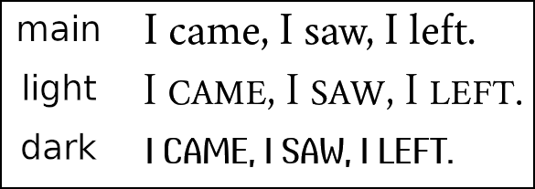

topic: Overview
topic: OverviewInterior Page Fonts
In General
Unlike most other LaTeX document classes, Novelette does not choose fonts
via \usepackage{Font Name}. It does not set fonts by
\setmainfont or \rmfamily or any other command.
 top
topMain Font : Swainson
Whether you like it or not, the main font is always Swainson, which comes with Novelette. This font has Regular and Italic. Its character set includes Latin-1, typographic support, small caps, lining/oldstyle numerals, and a few other characters beyond Latin-1. In other words, it is well-suited to the limited number of languages that Novelette supports.
By using a specific font with known properties, Novelette can do some things more accurately than would otherwise be possible with arbitrary fonts.
 more info
more infoTowhee Fonts
In special places, such as page headers, chapter openings, and title page, you may choose another font.
Novelette provides several Towhee fonts. These are not related, other than
by name. They are selected by font=setting as option to one
or more of these commands: \name, \subname,
\formatX (X = a, b, c, d, e, f) and \layout.
- Towhee-Light is invoked by
font=light. It is a "titling font" that is lighter in weight than the main font. Its lowercase letters are reduced-size uppercase forms (thus, no small caps needed). Although you may use this font whereverfont=settingis allowed, it looks best at larger than normal sizes. Italics not available. - Towhee-Dark is invoked by
font=dark. It has only uppercase letters (typing lowercase will print uppercase). Its style is very different from Swainson. Although you may use this font whereverfont=settingis allowed, it is particularly suitable for prominent page headers.
Comparison of main, light, dark:

Alt Font: Libertinus Serif
\altfont{true or false} % In Preamble.
\alt{characters} % In document body.
The Swainson character set is intentionally limited to Latin-1, plus typographic support, plus a few other characters outside Latin-1. This suffices for the intended languages of English, French, Catalan, Spanish, Italian, and German.
Eastern European, Greek, Cyrillic, and other world languages are not supported. However, if you need the occasional character for a word or phrase, you may use a fallback font. This is not automatic. You must do several things to make it work:
- Use the TeX package manager, to install
libertinus-fonts. This enables Libertinus Serif as fallback font, Regular and Italic. It has a very large character set, and is automatically tweaked so that its characters blend well with Swainson. Its license is SIL OFL v1.1. - In the main document Preamble, write
\altfont{true}. This tells Novelette to load Libertinus Serif. - If you do not write
\altfont{true}in Preamble, then Novelette will not load the font, and you will be unable to use the\altcommand anywhere in your document. - If you write
\altfont{true}but do not have the font, an error results. - In your Novelette document, use command
\alt{char}to print char in the Libertinus Serif font. The char may be one or more utf-8 text characters, Regular or Italic. - If you use
\altbut did not set\altfont{true}, an error results. - You cannot use
\altwithin\title, or\author, or within page headers/footers. These are places where you should not be using fallback characters, so it is not a real limitation. - If the fallback characters are modified (Italics, small caps, or other
features), write the modification inside the
\altcommand.
Wrong:\ital{\alt{char}}.
Correct:\alt{\ital{char}}. - Do not write
\altwithin stylistic text (Towhee), or combined with a deco font. It is not an error, but it will look wrong. - Unable to install LaTeX packages? You may place LibertinusSerif-Regular.otf and LibertinusSerif-Italic.otf in the same folder as the main document (not a subfolder). Then you do not need to install the font package.
Optional Decorative and Dramatic Fonts
\decofont{filename} % In Preamble.
\dramafont{filename} % In Preamble.
You may request one "decorative" font, and one "dramatic" font.
A good place to use these fonts is on the book title page, where
interesting design is important. However, these fonts may be used inside
any command that has its style set in Preamble, using font=deco
or font=drama.
- These fonts are set in main document Preamble.
- You do not need to set these, if you do not use them.
- The chosen fonts must be OpenType or TrueType. They are specified by filename with extension. Each of these fonts is a single font file, not a complete font family.
- You may choose any available font weight or style. It will be the only one
used for that font. So if you choose an Italic font, then everything in that
font will be Italic. If you choose Regular, then
\italwill not change to Italics. - Example:
\decofont{IwonaCondHeavy-Italic.otf}. - If you set
\decofontbut the file is not available, an error results. If you do not set it, but requestfont=decoas a style, it is not an error; instead, the main font (Swainson) will be used, and an alert will be issued. The same applies for drama. - Unable to install fonts? You may place the font files in the same folder as the main document (not a subfolder). Then you do not need to install them.
Using Images Instead
The book title page (and perhaps half-title) may benefit from using an image, instead of text. This can create powerful visual effects that connot be easily achieved by fonts, even if Novelette allowed more fonts.
If you use images, be sure that the decorative title will read the same as text. That is, do not create an image so fancy that its letters are no longer obvious.
In all cases, the copyight page must have the book title in ordinary text.
Details
More About Swainson and Towhee Fonts
Swainson is vaguely in the Bembo/Garamond/Caslon style, although it is not derived from any of them. The LaTeX Crimson/Cochineal fonts were used for reference, although Swainson is different.
Swainson is named after Swainson's Thrush. Towhee is named after the Spotted Towhee. These are seasonal songbirds that visit the developer's neightborhood.
Swainson and Towhee fonts bear the SIL Open Font License, v1.1. They may be freely used in commercial publications.
Swainson does not have bold weight, because bold is not used in popular fiction. Swainson-Bold is a copy of Swainson-Regular. Swainson-BoldItalic is a copy of Swainson-Italic. This is a hack, to avoid issues that might arise if you use Swainson in a word processor (Novelette does not care).